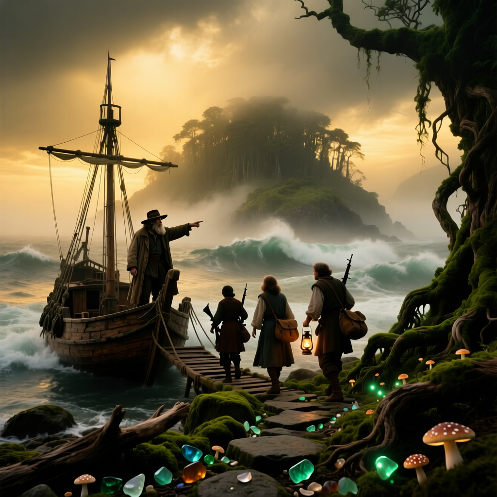

ЭКСПЕДИЦИЯ НАЧИНАЕТСЯ
Это не просто квест. Это полное погружение в мир тайн и опасностей. Вам предстоит стать частью экипажа, исследовать остров, решать головоломки и принять судьбоносное решение при встрече с артефактом.



НАЧАТЬ ЭКСПЕДИЦИЮ ПРЯМО СЕЙЧАС
ПРАВИЛА ВЫЖИВАНИЯ
- Доверяйте своей команде, но проверяйте каждую находку.
- Тайна острова раскрывается только тем, кто наблюдает.
- Артефакт не терпит спешки. Анализируйте каждую деталь.
- Готовьтесь принять решение, от которого зависит больше, чем ваша жизнь.
- Время на острове течет иначе. У вас есть 60 минут.
ДО ОТПЛЫТИЯ
Следующий рейс «Странника» отправится через:
60:00
Таймер запустится заново, когда вы начнете квест.